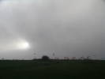
Vendredi soir, 200 km que je roule dans la brume... Sur le plateau, ça ne s'améliore pas, et il y a du vent, un froid de canard ! Les conversations en plein air ne s'éternisent pas, pour une fois !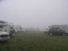
Samedi matin, à mon petit lever, ça ne s'est pas arrangé, sauf qu'il n'y a pas de vent ! Avantage, il fait beaucoup moins froid ! Les campings-cars sont sur le haut du plateau cette année, un peu moins dans l'action, mais il y a plus de place.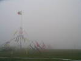
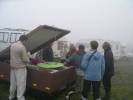
Alors on se rabat sur les discussions techniques ou autres, comme la remorque que Jean-Marc a construite pour ses besoins : transporter son char sans le démonter + tout le matériel cervolistique...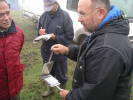
Bruno présente son moule à gaufres, qui permet d'essorer les tampons de papier de la paraffine chaude en excès, pour former des tampons-brûleurs de montgolfières papier !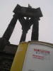
On fait un petit tour aux toilettes, ça occupe, il faut traverser toute la plaine (enfin, la pente), mais on ne peut pas les rater, elles agrémentent le trophée élevé à Vercingétorix et à la victoire de Gergovie...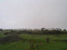
Les camping-cars continuent à arriver, il y a une grosse inflation cette année, même de non-cervolistes qui se faufilent avant que l'Organisation ne se mette en place...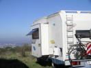
Certains sont même dotés de tiroirs qui agrandissent l'espace vital intérieur...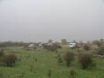
Il y a aussi quelques hameaux dissidents, principalement de tractionnistes du pays qui roulent d'habitude... là où sont garés les campings-cars !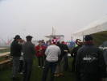
Un petit tour des popotes s'impose. Ici, un orchestre tente de divertir les cervolistes...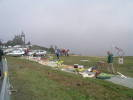
Comme tous les ans, les maquettistes d'avions télécommandés ont établi leur parking et leur piste (déroulable) au bord du plateau.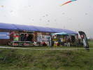
Et la grande baraque en dur démontable abrite la plupart des marchands comme Ludo, Dom, le peintre caricaturiste, la famille Gosselin...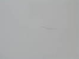
Le vent s'est levé, les Awitas sont en l'air et je monte même mon Albatros. Mais il ne s'agit pas de monter trop haut !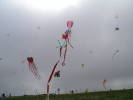
Emmanuel a réussi à monter son train de têtes de chats carrées (sauf les oreilles, bien sûr) sous un sled...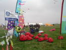
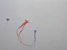
Les VentDeFolietains ont amené bien sûr leurs Folyangs qui se balancent là-haut et s'accrochent régulièrement à leur grande joie !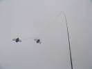
Ce joli mobile en duo de mouches (?) vole et s'esbaudit sans trêve...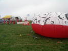
Michel a remonté son pas de tir vers la Lune gonflable. Il a maintenant quatre pas de tir, et explosera 1500 diaphragmes dans le week-end...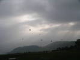
Dans la vallée, les montgolfières profitent d'un vent qui baisse pour un petit vol au-dessus de la chaîne des puys...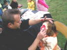
Au sol, les maquilleurs d'enfants ne désemplissent pas. La confiance des enfants qui confient leur visage les yeux fermés à un inconnu est attendrissante...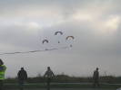
L'équipe des paramoteurs vient présenter un show intéressant. Il paraît qu'ils sont champions de France !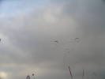
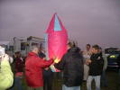
La nuit tombe vite en cette saison. Petit vent, c'est le moment de lancer un petit ballon. Bruno amène le sien, assez volumineux et qui se gonfle bien...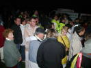
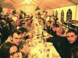
Sous la tente, l'apéritif est offert, d'immenses tables nous attendent...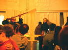
Au menu, Aligot bien sûr, avec le coup de patte du maître aligotier...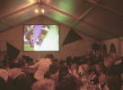
Tout est évidemment prévu pour projeter en direct le match de rugby France/All Blacks, la salle vibre...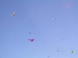
Au petit matin, grand beau temps, vent faible mais suffisant. Les cerfs-volants sont en l'air tôt, un temps comme ça, ça pousse à voler...François monte, monte son rokkaku, tellement bien que ça le pousse à faire de la photo avec sa nacelle semi-mécanique ...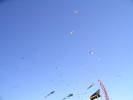
De plus en plus de cerfs-volants en l'air, et la surface s'étend pour éviter les emmêlages, mais il ne manque pas de place sur le plateau !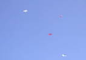
Malheureusement, le vent baisse progressivement. C'est la fête pour les Jessicas de tout poil et leurs dérivés !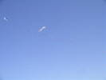
Un grand train résistera longtemps, en ondulant selon les couches de vent...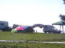
Là, ça a peut-être été un cerf-volant, mais ça fait maintenant une belle bâche pour s'abriter du soleil !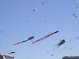
Le vent est remonté, l'équipe Awita a tout mis en l'air...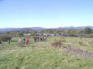
Les parkings continuent à se remplir (6000 places prévues), des hordes montent à l'assaut du plateau, pire que les Romains !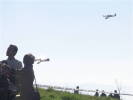
Les Racers, les voilà, ces avions monoplaces de course à moteur boosté viennent tourner à grande vitesse autour du plateau !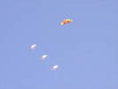
Il y a aussi du Rokkaku dans l'air ! Le propriétaire des blancs trouve que ça ne tire pas assez, il en a monté 3 en train. Il a juste demandé de l'aide pour les redescendre !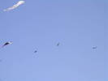
Un autre type d'avion, un avion de voltige, hyperpuissant aussi, qui fait du stationnaire accroché à l'hélice, mais aussi des figures invraisemblables, cul par-dessus tête...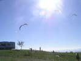
Tous les types de cerfs-volants sont là : beaucoup de monofils, un peu de pilotable, un peu de combattant et des voiles de traction qui ont leur espace, même si la pente ne se prête pas aux évolutions des chars !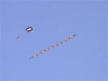
Ce cerf-volant plat a une queue magnifique. Son papa en a d'ailleurs fait une paire dans des teintes différentes...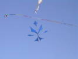
Voilà une belle création, très ajourée, un peu souple, mais légère...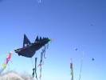
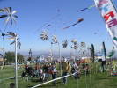
Joël a sorti ses moulinets de plume, toujours surprenants. Il a gardé les autres au chaud, il doit encore faire Marseille et Fréjus sans rentrer réparer chez lui...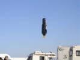
Le vent baisse toujours, Joël sort son manchot solaire qui vole (comme les pingouins), mais gonflé à l'air chaud par l'astre divin ! Il est rare qu'il vole si haut !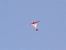
Le vent devient vraiment quasi-nul. Je vole avec ma raie manta et un seul autre cerf-volant est en l'air. Joli, mais il pique quand il se dévente, pas très indiqué pour le vol light...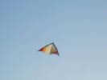
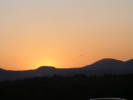
Bon, c'est l'automne, à 7 h le soleil est couché, je me suis fait prendre de vitesse, mais il reste de belles couleurs derrière la chaîne des Puys...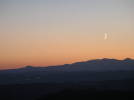
J'ai raté le coucher de soleil, mais pour que vous ne soyez pas frustrés, je vous offre sans supplément un coucher de lune splendide...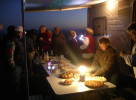
Pour ceux qui restent ce soir, Marie-Hélène improvise un petit dîner sur le pouce soigneusement préparé. Chacun apporte un peu ce qu'il veut, moi j'amène un verre (entre autres)...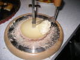
Marie-Hélène a retrouvé son racleur à fromage qu'elle avait prêté. Il reste même de la goûteuse "tête de moine" (bien sèche, maintenant) pour faire des rosettes de fromage...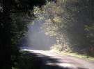
Lundi matin, je partirai tranquille, ce soir il faut 2 h pour arriver au carrefour... Je ferai le tour du Puy-De-Dôme, sur de jolies petites routes tranquilles dans la fraîche brume matinale, mais au soleil...